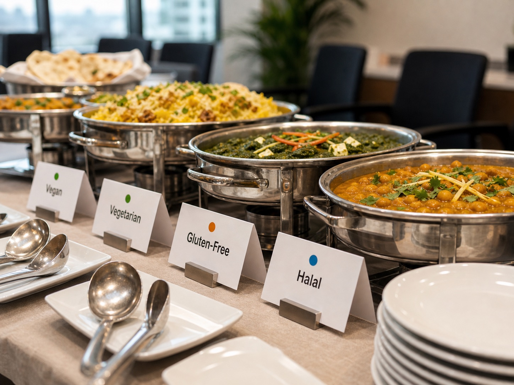
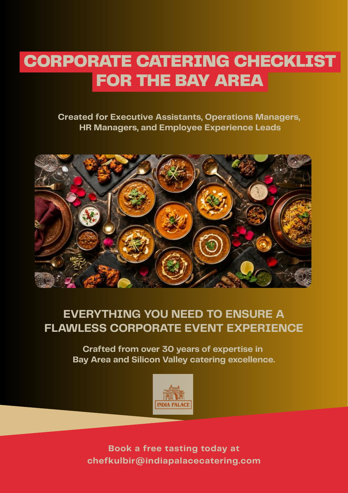

Late or confusing delivery
Confirm timing, entrance, floor, loading, contact, and setup before the meal matters.

Bay Area office catering
Indian team lunches, all-hands meals, client meetings, and employee events delivered on time, clearly labeled, and handled by one accountable point of contact.
For office managers, EAs, People Ops, employee experience teams, chiefs of staff, and HR leaders planning food people will actually enjoy.
The real job is not just lunch
A good office lunch should not turn into a Slack thread, a missing-label panic, or a story leadership remembers for the wrong reason.
India Palace Catering is designed around the details most caterers treat as afterthoughts: accurate headcount, written delivery instructions, dietary labels, enough food, buffet flow, setup, cleanup, and fast communication when something changes.
Confirm timing, entrance, floor, loading, contact, and setup before the meal matters.
Clearly labeled dishes help vegan, vegetarian, gluten-free, and halal-conscious employees eat without guessing.
Plan the right buffer for working lunches, cultural celebrations, and mandatory meetings.

What our team handles
A real person responsible for the order, not a support queue.
Headcount, address, floor, room, delivery window, dietary notes, and setup expectations.
Serving utensils, labels, traffic flow, portions, and the practical details that keep lunch calm.
Indian dishes that can cover mixed teams without creating four separate ordering puzzles.

For People Ops and office leaders
For an office meal, the food has to satisfy different diets, different spice comfort levels, and different expectations without making the organizer manage every bite.
“The food should be the least stressful part of your day. It should be your favorite.”
Business Catering Checklist
Use it to plan any office lunch without late food, missing labels, wrong headcount, cold trays, or surprise invoices.

Request for proposal
Share the details that matter most to your team, from guest count and timing to dietary preferences, setup needs, and the kind of experience you want people to have. We’ll use that context to respond with a thoughtful catering recommendation.
Buyer questions
For a desk or meeting-room lunch, plan around 85% of confirmed headcount plus a 10% buffer. For an all-hands or mandatory meeting, order for the full headcount.
Yes. Indian menus are especially flexible for mixed office teams because vegetarian, vegan, lentil, rice, and halal-friendly options can live naturally in the same buffet.
Headcount, date, delivery address, floor or room, delivery window, event type, dietary restrictions, setup expectations, cleanup needs, and whether leadership or clients will attend.
Ask for food cost, delivery, setup, equipment, service staff, cleanup, gratuity, dietary labeling, and any additional fees. A clear quote prevents surprise invoices.